Milestone 1
Data Description and Assessment:
A Paragraph Intruducing the Data:-
I am using NYC Yellow Taxi Ride data from March 1 to 3 of 2023. I am using this data because I worked with data like this in Math 128 and Math 328. Also I was looking for some data related to New York City. I found this data in NYC Open Data. Click Here for Data I have also included the CSV file download button at the end of this page and can also be found in Github inside the folder name "Files/YTM123.csv".
The data set was created by the New York City government for public use. The data sets contain 19 columns. And each row is a taxi trip record. Some of the important rows are "passenger_counts", "tota_amount", "tip_amount" etc. To learn more about the data go to the link >>> Data Dictionary-Yellow Taxi Trip Records
Accessing the Data...
The Structure of the data is rectangular. This is csv file with rows and columns that what makes this a rectangular shape data. The granularity of the data is at the individual trip lavel. Each row in the DataFrame represents a single taxi trip, including where and when it started and ended, the distance traveled, and the various costs associated with that specific journey.
The scope and completeness of the data is pretty low. The datasets contain 234,244 total records for only 3 days worth of taxi ride. If we want to calclute how taxi ride changes over seasons, holidays or other different time, we will not be able to do that with this data sets. This 3-day window is too small. (I was trying to use whole year of taxi ride, but the jupyter notebook was taking hours to load)
The data includes two primary time-related columns: tpep_pickup_datetime and tpep_dropoff_datetime. This data has the passenger pick up and drop off time. I think the time are very accurate becaue it was recorded by the computer of the taxi, not by human input. Which makes it more accurate and less likely to have typo or other mistake.
The faithfullness of the data is medium. I think it captures the reality pretty good. In the csv it has 3 days worth of data, 24hrs/day. Also there were some missing data. Around 6,039 rows with no values. So, it looses some point in faithfullness.
Cleaning the Data:
For this data so far, I only removed 6039 rows of missing rows. I also changed some Data Types using the "dtypes" function. No duplicaed data found...Removed two comas from the trip distance.
The Steps to Clean the Data
missing_rows = x.isna().any(axis = 1) missing_rows.head()
missing_rows.sum()
ax =x[~missing_rows] ax.head()
ax["trip_distance"] = ax["trip_distance"].str.replace(",","")
Singel Variable Distribution Plots - 4 Columns
1st column - Number of Passenger per Rides
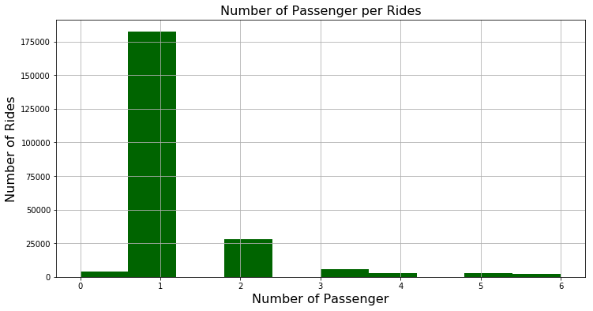
In Figure 1, of the Histogram we can see that most of the ride had only one passenger. There are some rides with 0 passenger, this might be some kind of typo or the taxi company taking the car to one place to another. But the intersting thing is that, most peopel just ride the yellow cabs by themself. This is a surprising finding for a city like NYC, that has a useable public transportation system.
C2 - Number of rides that paid congestion_surcharge
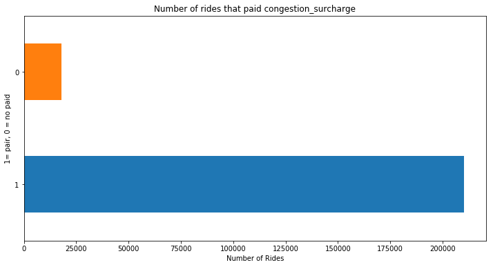
On the figure 2: graph, we can see that most of the trip paid congestion surcharge. <<< (To learn more about congestion surcharge, click that link.) These first two graph are wired for New York City. If traveling in the city by your self, why not take the Subway, save some money. But People would rather the taxi and pay congestion surcharge price to go lower Manhattan. Also this Figure2 graph tell us that most people took the taxi to go in lower Manhattan, or leaving from lower Manhattan.
C4 - Tolls or No Tolls
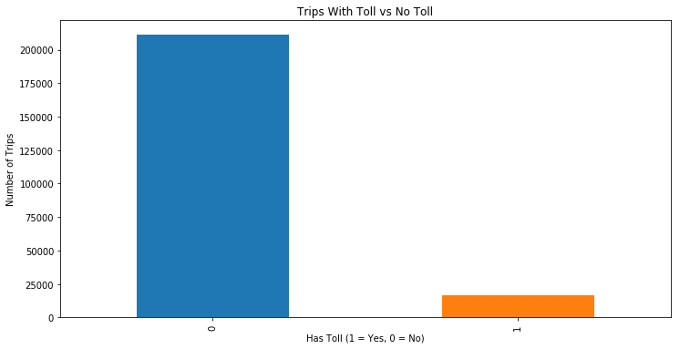
This figure 3, graph tells us that most trip did not pay tolls. So we can conclude that most of them took place in side on one Borough, like Manhattan or Brooklyn etc. Very few travled outside of the Manhattan city center.
C4 - Paynment Types
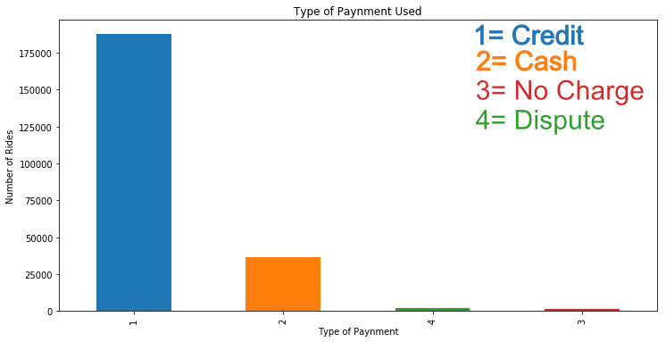
It wasn't very surprising that most people uses credit card in the US to pay for everything. Still there were many people who also used cash. This is a intersting chart that show us that even in city like New York people still uses cash in 2023.
Multi Variable Distribution Plots, 2 or more Variables, 2 Plots:
1st Plot - Average Total Amount by Pickup Hours
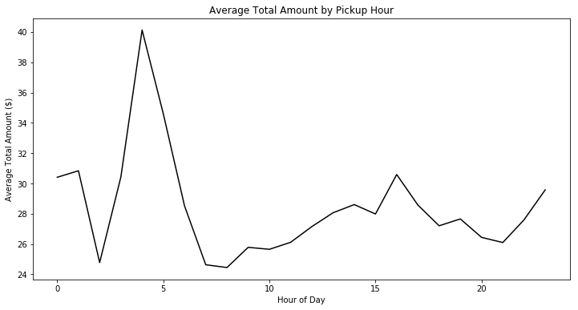
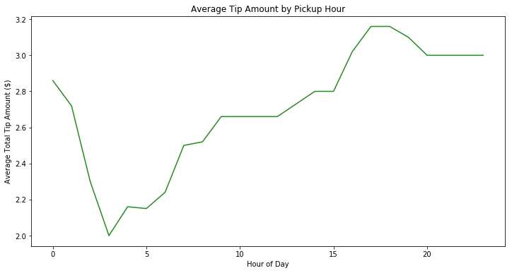
These two are very intersting graphs. Both of this graph uses two different columns at the same time. The 1st one uses, Date-time-houre and Average Total Amount and the second one uses Date-time-hours with average Tips amount.
This tells us two diffrent story. On the first graph, Figure 5, we can see that people paid more in the early morning. and on the other hand, the total amount was lower in evening and late night, and people paid more tips, Figure 6.
So, basically the lower the fare the higher the tips...But the average tips are very small amount. The taxi driver will make more in midnight to early morning, when there are more fare and less tips.
Milestone 2
Milestone 2 - Models
Step 8 - Model 1
Linear regression Model
In this step 8, I used a Linear Regression Model to predict the total taxi fare amount "total_amount". By using this model my goal was to understand how different variables change the total cost of a taxi ride.
Cleaning Data For Better Models
Before I run the model, I had to remove one big outlier from my data. I found out this when making a graph after I created my model. I used the code data2 = data2[data2['trip_distance'] < 150] to remove any trip distance values above 150 miles. Most trip distance were between 1 to 50 miles. ALso I removed data2 = data2[data2['total_amount'] > 0]. There were a lot of data ponts on the negative on the total amount. I think they are typos by the computer of the taxi or some human mistake. After I removed these, both of my model in step 8 and step 9 improved a huge amount.
Later I also added these to cleaning codes to lower the P values on the passenger_count variable bellow:
data2 = data2[data2['trip_distance'] > 0.1]
data2 = data2[(data2['passenger_count'] > 0) & (data2['passenger_count'] <= 6)]
First Model OLS Summary ( )
Before Cleaning Data
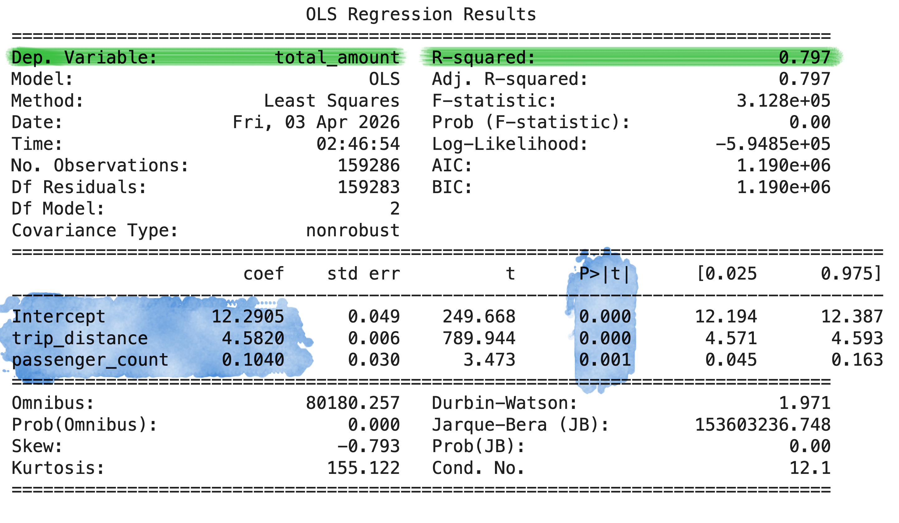
After Cleaning Data
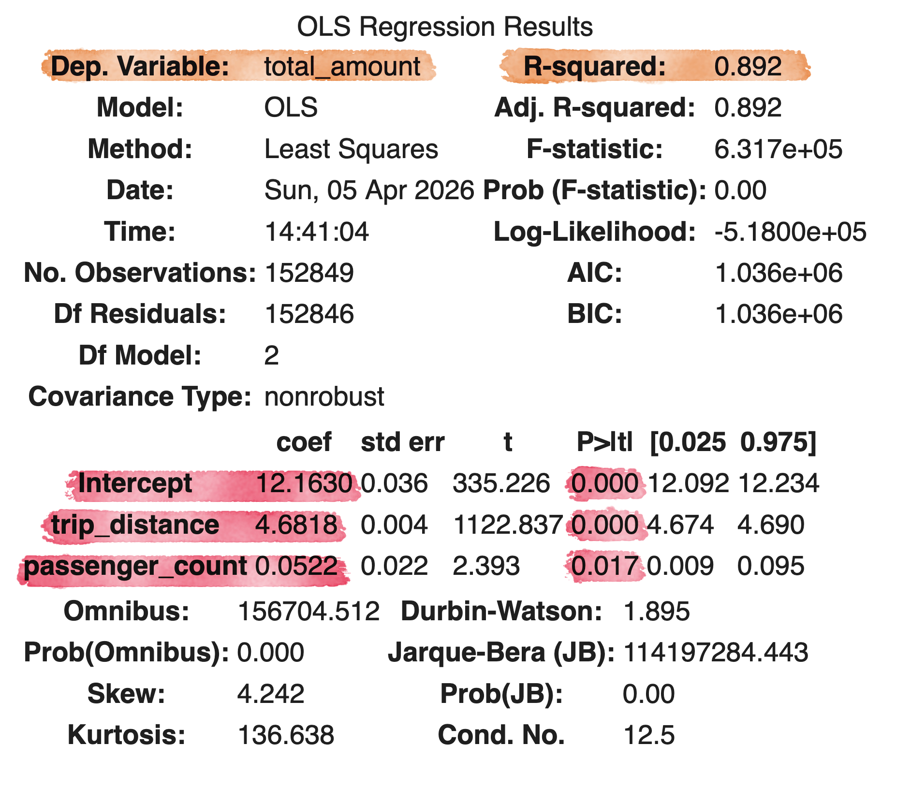
For the first model, I only used the trip distance and passenger counts as independent variables. The R-Squared = 0.892, looks very good when using just two variables as independent variables. The Mean Squared Error is 52.04. The MSE is little high, can be better.
Second Model with different Parameters, OLS Summary ( )
Before Cleaning Data
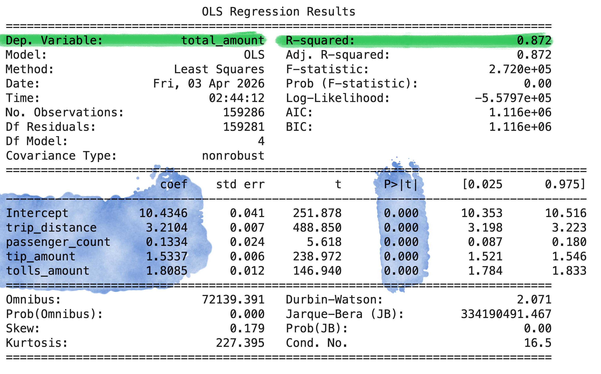
After Cleaning Data
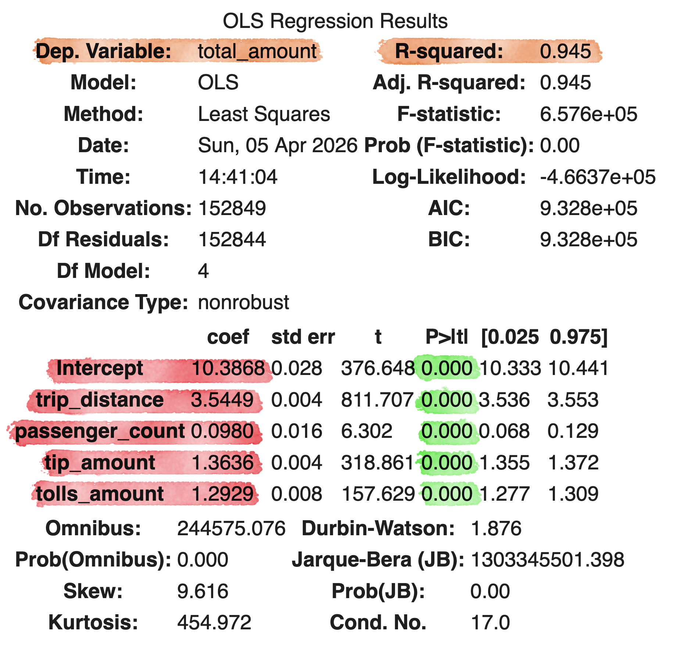
On this second model shown in Figure 10, I added few more parameters and that made improved the R-squared = 0.945. The mean_squared_error(y_test, y_pred) = 32.97. The MSE is much smaller compair to the first model with few parameters.
I added Tip Amount and Tolls Amount. These two variable improved the R-squared because they are part of the total amount.That's why we are seeing much better R-Square and MSE.
ALso both of my model's p>/t/ values are very good. They are all below 0.5. So, I did not need to remove any variables because of that.
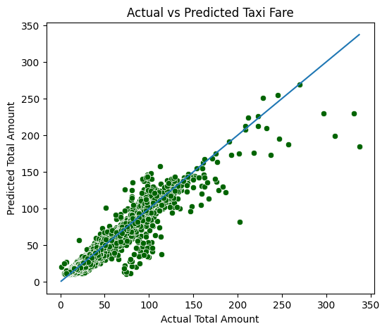
As we can see on figure 9, that the linear regression line is doing a pretty good job Predcting the Total fare from the actual values.
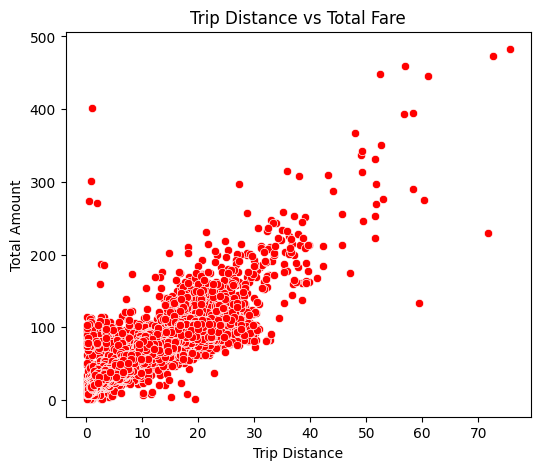
This graph on Figure 12, shows the relationship between the Trip Distance and Total Fare.
There is a very clear positive trend. As the Trip Distance increases the Total Fare also increases with it. This shows us that Trip Distance is one of the most important factor in Total Cost.
ALso the points are kindof spread out. Showing us that other factors like the tips and tolls are also influence the total amount.
This supports my desicions to include the other variables on the second model, to improve the prediction accuracy.
Step 9
Model - KNN - K-Nearest-Neighbors
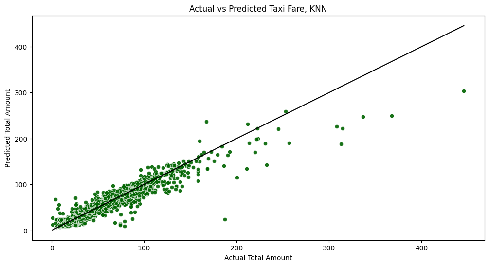
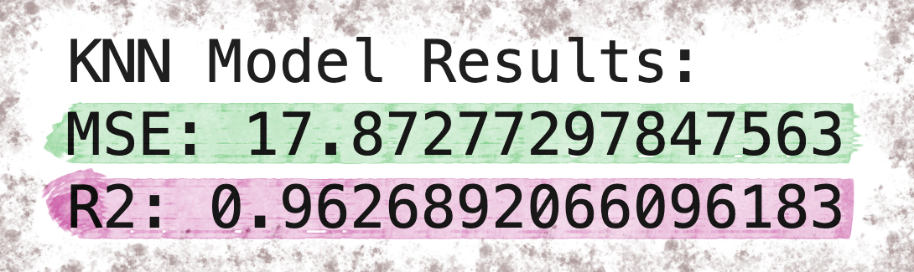
In this step 9, I used the K-Nearest-Neighbors (KNN) model algorithm to predict the total taxi cost. The KNN is a differnt model compair to Linear Regression. Linear regression just look for linear relationship between variables. On the other hand, KNN also look for the nearest data point in a datasets. Also known as "Good Neighbors"
The R-squared = 0.96. Higher compair to the Linear Regression Model, Which was 0.945.
mean_squared_error(y_test, y_pred_knn) = 17.87. Lower compair to our Linear Regression Model, which was 32.97.
For the KNN model, Dependent Variable same as Linner Regression = "total_amount" and Independent variables are ['trip_distance', 'passenger_count', 'tip_amount', 'tolls_amount'] . I used only the most important variables as independent variables for the KNN.
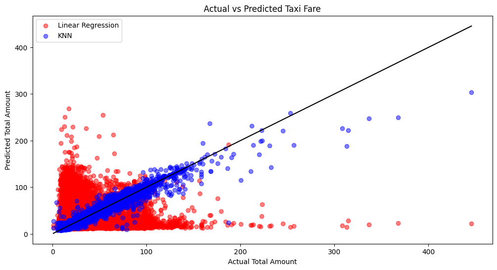
This graph compares the performance of the Linear Regression model and the K-Nearest Neighbors (KNN) model by plotting the actual taxi cost against the predicted values.
The black line represent perfect predictions. The points closer to the black line indicate better model. The KNN model shows a more tighter cluster of points compair to the Linear Model, Showing that KNN produces more accurate predictons.
So, at the end, I would use KNN model for my data. As we can see from the visual above that KNN is better performaing than Linear Regression. Also KNN produced better R-Squared and smaller Mean Squared Error compair to the Linear Regression model from Step 8.
So the KNN model is the winner.
▽ Final Milestone ↓
Final Milestone -> Analysis ⇣
Step 10
SNS Heatmap
corr = data2[["trip_distance", "tip_amount", "tolls_amount", "passenger_count", "total_amount"]].corr()
sns.heatmap(corr, annot = True, cmap = "coolwarm")
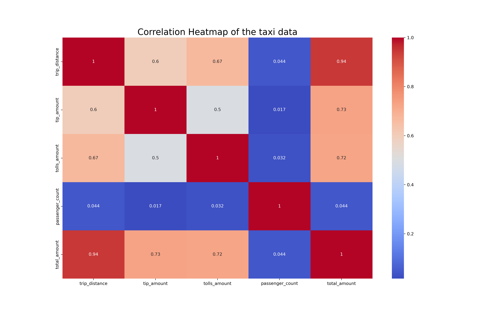
In this step 10, I used few important quantitative variables of the taxi data and created a SNS heatmap.
The trip distance and the total amount has the highest amount of correlation. That make sence, the taxi will make more money the farther he/she driver.
The SNS heatmap shows the correlation between two variables. 1 is the strongest correlation, 0 is weak or no correlation and -1 is strong negative correlation. In our graph we do not have any negative correlation. All the 1's are same variables.
One important thing that stand out on my graph, is that passenger count do have any good correlation with any other quantitative variables. The second place is the tip amount. Other than passenger count and tip amount all the other variables and fairly good correlation one another.
Also there is a positive correlation between tip amount and trip distance. This shows that people tend to leave larger tips when travling a long distance. But does not have a good correlation with passenger count. So, we can conclude that a larger group of people will not leave a learge tips.
Step 11 ⇣
SNS BoxPlot of Taxi Data
sns.boxplot(x="passenger_count", y="total_amount", data=data2)
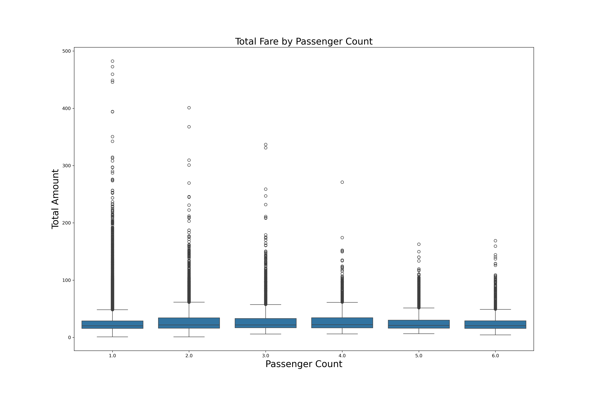
This box plot supports my heatmap above. That passenger counts does not strongely affect the total amount.
If you look at the box sizes on this graph, you can see that all the boxes are the same size for 1 - 6 passengers.
All the blacks dots are outliers. Mostely long distance trips. For passenger 1, they might be expensive airports rides.